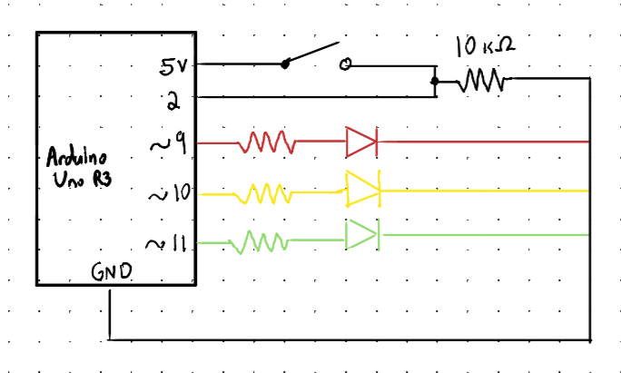
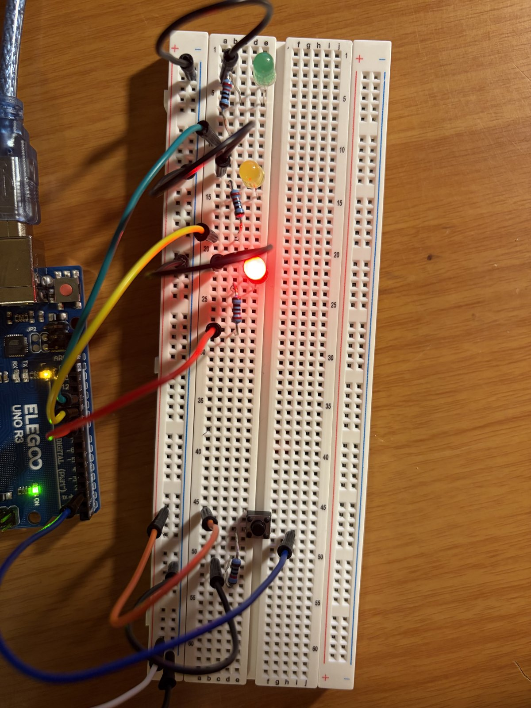
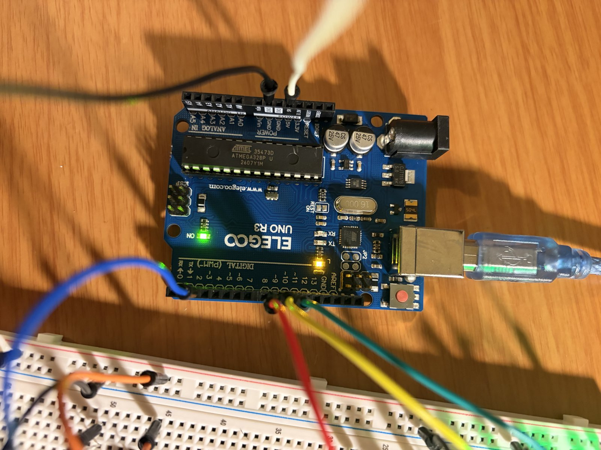
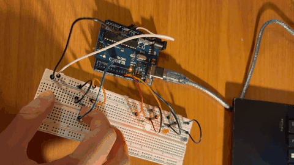
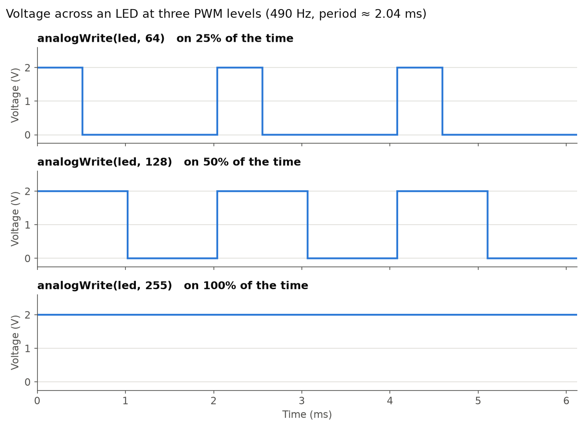

A prototype light-up toy for the toy company. Each press of the button turns off the LED that is lit and fades in the next one, cycling through the colours.

analogWrite(). The button connects 5 V to pin 2, and the 10 kΩ
resistor holds pin 2 at 0 V when the button isn't pressed.
Each branch of the circuit has an LED and a resistor wired in parallel between their Arduino pin and a shared ground. Since they are in parallel, each branch receives 5 V from its pin.
Kirchhoff's Voltage Law for one branch (pin → resistor → LED → ground):
Vs = VR + Vl VR = Vs − Vl = 5 V − 2 V = 3 V
Ohm's Law for the resistor (same current as the LED in series):
R = VR / I = 3 V / 0.020 A = 150 Ω
The kit doesn't include a 150 Ω resistor, so I rounded up to the next available value, 220 Ω, which keeps the current under the LEDs' rating:
I = VR / R = 3 V / 220 Ω ≈ 0.014 A = 14 mA
When the button is pressed, it connects 5 V to pin 2 and to the 10 kΩ resistor that goes to ground. Without the resistor, pressing the button would connect 5 V straight to ground and short circuit. With it, the current through the button is limited to:
I = V / R = 5 V / 10,000 Ω = 0.0005 A = 0.5 mA


// Store the pin numbers for the LEDs
const int LED_PINS[] = {9, 10, 11};
// Store the number of LEDs
const int NUM_LEDS = 3;
// Store the button pin number
const int BUTTON_PIN = 2;
// Keep track of which LED is on (0 = red, 1 = yellow, 2 = green)
int currentLed = 0;
// Remember what the button read the last time the loop() ran
int lastButtonState = LOW;
void setup() {
// Cycle through the LED pins
for (int i = 0; i < NUM_LEDS; i++) {
// Configure the LED pin as an output
pinMode(LED_PINS[i], OUTPUT);
}
// Configure the button pin as an input
pinMode(BUTTON_PIN, INPUT);
// Start with the red LED on
digitalWrite(LED_PINS[currentLed], HIGH);
}
void loop() {
// Read the button (HIGH when pressed, LOW when released)
int buttonState = digitalRead(BUTTON_PIN);
// If statement starts when button is pressed (only once per press)
if (buttonState == HIGH && lastButtonState == LOW) {
// Turn off the LED that is currently on
digitalWrite(LED_PINS[currentLed], LOW);
// Move to the next LED
currentLed = (currentLed + 1) % NUM_LEDS;
// Increase the brightness from 0 up to 255
for (int brightness = 0; brightness <= 255; brightness++) {
// Set the LED's brightness
analogWrite(LED_PINS[currentLed], brightness);
// Wait 2 ms between steps
delay(2);
}
}
// Save this reading so the next loop() can tell if the button was just pressed
lastButtonState = buttonState;
// Wait 20 ms for debounce
delay(20);
}
The value passed into analogWrite() sets what fraction of each cycle the pin is at HIGH, out of 255:
analogWrite(led, 64): 64 / 255 ≈ 25% on, about 0.51 ms of every 2.04 msanalogWrite(led, 128): 128 / 255 ≈ 50% on, about 1.02 ms of every 2.04 msanalogWrite(led, 255): 255 / 255 = 100% on, so the LED is at 2 V the whole time
Each LED branch has 3 V across its 220 Ω resistor, so each LED draws:
ILED = 3 V / 220 Ω ≈ 0.0136 A = 13.6 mA
If all three LEDs are on at the same time:
Itotal = 3 × 13.6 mA ≈ 40.9 mA
This is below the Arduino's limits since each pin only supplies 13.6 mA, which is under the 20 mA maximum per LED and 40 mA maximum per pin. The 40.9 mA total is under the 200 mA limit for the whole Arduino. Pressing the button adds only 0.5 mA through the 10 kΩ resistor, which doesn't change anything.
Battery life on a 1200 mAh battery with all three LEDs on:
t = 1200 mAh / 40.9 mA ≈ 29 hours
That only counts the LEDs. The Arduino board itself also uses current to run, so the real circuit would draw more and not last as long. Additionally, my toy only lights up one LED at a time, so in normal use it would likely last a bit longer.
I measured the voltage across the red LED while it was fully on, with my multimeter set to DC volts. It read 1.94 V.
The theoretical forward voltage I used in my calculations was 2 V, and red LEDs are usually rated around 1.8–2.2 V. My measurement is only 0.06 Vlower than 2 V, so it's well within the expected range. With 1.94 V across the LED, the resistor gets slightly more voltage, so the real current is higher than calculated, but still under the 20 mA maximum:
I = (5 V − 1.94 V) / 220 Ω ≈ 13.9 mA
Yes. I used AI tools to help me format & build the documentation page and compress the GIF so that it was small enough for GitHub.